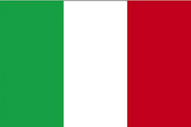
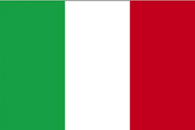

¡GENIAL! Has superado el primer nivel de dificultad, pasas al siguiente nivel y por tanto
al siguiente mundo virtual, Xana. Este mundo está lleno de geografia pero sobre la Tierra, ya que es un mundo bastante similar a este planeta.
Contesta la pregunta para poder llegar al siguiente mundo y cumplir tu destino de llegar a la Tierra.
GEOGRAFÍA
Francia cuenta con 67 millones de habitantes y su capital es Paris.
¿Cual es la bandera de Francia?

 
